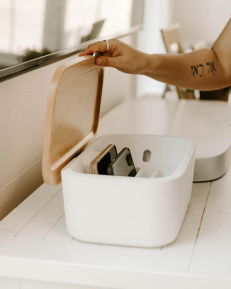

Creates space from your phone
Unlike other solutions designed to reduce screen time, the Aro platform combines an app and a physical device to create distance between you and your phone so you can have quality time without the distraction of your phone.